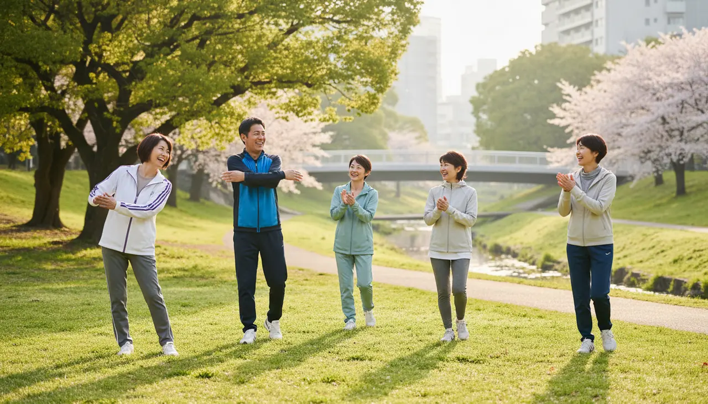

01
運動強度と頻度を確認する
ウォーキングのような軽い活動から、球技のように体力を使う活動まで幅があります。公式案内に運動強度や所要時間の目安があれば目を通し、無理のない範囲から始めます。
Sports
ウォーキング、軽い球技、フィットネスなど。会話だけに集中しなくてよいので、話すのが得意でなくても参加しやすい活動です。ここでは活動選びの考え方と、大阪で確認できたスポーツ情報をまとめます。

ウォーキングのような軽い活動から、球技のように体力を使う活動まで幅があります。公式案内に運動強度や所要時間の目安があれば目を通し、無理のない範囲から始めます。
対象者の条件、用具の要不要、レンタルの有無、屋内外どちらの活動かは事前に確認しておきます。動きやすい服装や飲み物の準備も忘れずに。
その日の体調や天候によって、参加を見送る判断も大切です。主催者に体調不良を伝えることは失礼にあたりません。継続的な活動なら、次の回に参加すれば十分です。
選手として参加するだけでなく、大会運営やイベント支援としてスポーツに関わる方法もあります。体を動かすことに抵抗がある場合は、こうした関わり方も選択肢に入れられます。
Verified in Osaka
50PLUSが公式情報で確認できた、大阪のスポーツに関する情報です。開催日・参加条件・申込方法は、必ずリンク先の公式ページで最新情報を確認してください。
大阪市公式のスポーツ情報ページ。市民向けのスポーツイベント、参加者募集、スポーツボランティアなどの情報を確認できる。
エリア：大阪市
カテゴリー：スポーツ・野外活動
初参加の心構えや会話の始め方は、はじめ方ガイドでまとめています。
スポーツ以外のカテゴリーも含めた、公式情報を確認できた活動先の一覧です。